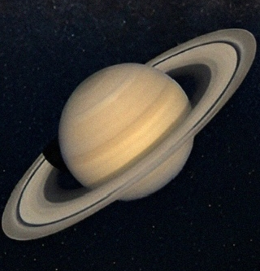
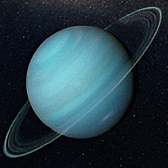
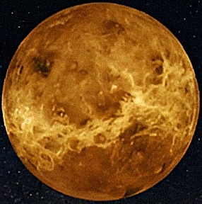
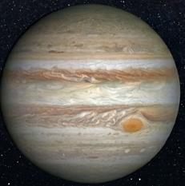
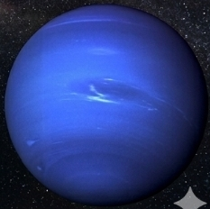
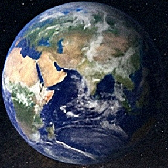
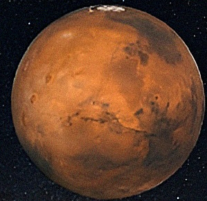
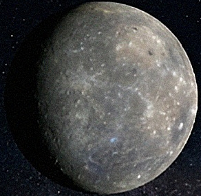

This exoplanetary encyclopedia — continuously updated, with more than
6,000 entries — combines interactive 3D models and detailed data on all
confirmed exoplanets.When you select a planet’s name, see a visualization
of each world and system, along with vital statistics.Filter by exoplanet type,
by discovery method, or by the mission or facility that found it.

saturn
gas giantexoplanets
are as massive as
saturn or jupiter or
larger, this category
also includes" hot
jupiter" which orbit
close to their stars

URANUS
is a giant ice planet that spins on its side,
causing extreme seasons as it orbits the Sun.

Venus
is similar in size to Earth but has a thick,
toxic atmosphere that traps heat,
making it the hottest planet despite
not being the closest to the Sun.

jupiter
jupiter is a gas giant with a
diameter of approxiomately 1400.00
kilometer

neptune
neptune is the eughth and fatherst
known planet orbiting the sun.

EARTH
Super-earth exoplanets are also
rocky, but between
Earth and Neptunes in
size

MARS
Mars is called the red planet because of its
iron-rich dust and is a major focus of
exploration due to signs it once had
liquid water and a more Earth-like climate.

MERCURY
is the smallest planet in our solar system
and orbits closest to the Sun, experiencing
extreme temperature changes between day and night.